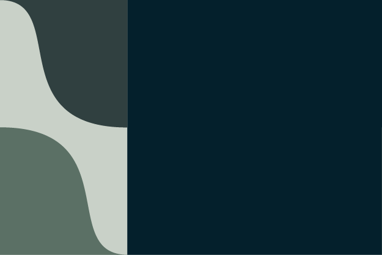

CSS Backgrounds

This is my rotation tessellation pattern. It was created by intersecting a circle on both side of a square, the center point of the circle was transformed into a curved line, the curved line was then rotated.